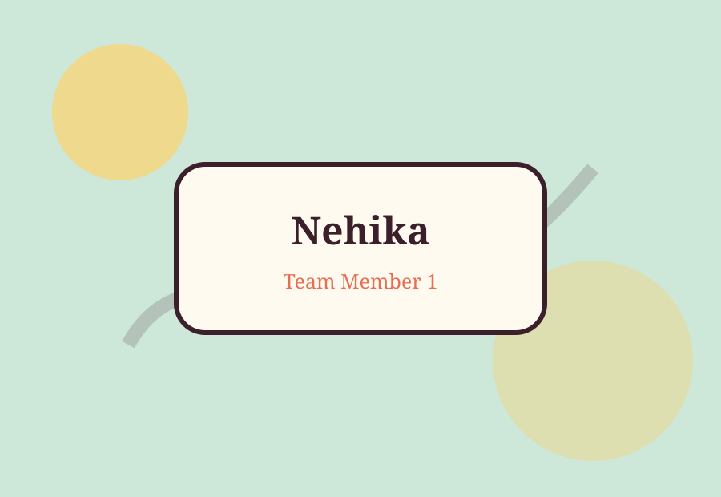

Nehika Subedi
Team Member 1
I contributed to the website content, page structure, design ideas, and final checking. This project helped me practice HTML tags, CSS styling, and responsive design.
Meet the Team
We are a two-member team creating a personal portfolio website for our Web Basic final project.

Team Member 1
I contributed to the website content, page structure, design ideas, and final checking. This project helped me practice HTML tags, CSS styling, and responsive design.
Student ID: Student ID
I contributed to the gallery page, skills section, navigation menu, and layout testing. I also helped make the pages consistent and easy to understand.
Our goal is to show what we learned in the Web Basic class by creating a complete multi-page website using HTML5 and CSS3 only.